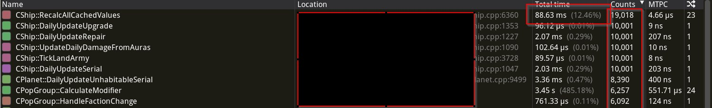

Кто к нам с мудростью придет, тот её и будет фиксить.
Существует довольно много распространённых «мудростей» о разработке игр на C++, различных обрядах и видах магии. И как это часто бывает с подобными сакральными знаниями, при внимательном осмотре — у части действительно есть право на жизнь, часть можно отправить в Каирский музей отбирать славу у мумий, а часть вообще оказывается родом из чужой реальности, и работать как предполагалось отказывается. Но это не мешает некоторым компаниям относиться к таким советам как к скрижалям, бережно принесённым с великой горы совещаний. Новым сотрудникам их передают почти с торжественностью обряда посвящения: «Так делали наши предки, так делаем и мы».
В других конторах, обычно молодых и индерзких, могут использовать различной длины приборы для наложения или заниматься плюшкинством и тащить в проект все что плохо или бесплатно лежит, обмазывая и без того непростую архитектуру толстым слоем абстракций, тулов и фреймворков, пока оно вообще не перестает работать. В такой атмосфере уже трудно разобраться, работает ли мудрость, или её просто утопили под десятком слоёв инженерного творчества. Поэтому к любым «истинам» лучше относиться спокойно и проверять их на практике, а не по степени древности. Собственно по любому пункту миф это или народная мудрость можете отписываться в комментариях, будет интересно услышать ваше мнение. Получился лонгрид, так что заваривайте чаю, ну или чего покрепче, картинок не будет... почти, а еще получилось, что кони, люди и мухи слеплены в большую котлету и размышления о разработке и плюсах перемежаются со студийными суевериями, кто был в студии, тот поймет.
(М) «Используй C(илу), Люк»
Боевой лозунг целой школы разработчиков, причем из достаточно известных игровых контор, которые свято уверены, что каждая строчка на плюсах автоматически вызывает падение FPS и пробуждает древнее зло компиляторе и предлагают жить в строгом мире чистого C, где всё предсказуемо, а компилятор не пытается выглядеть умнее программиста, хотя он умнее на самом деле в очень многих местах. Адепты использования С обычно попадают в игрострой из самых разных областей разработки, и их очень редко удается переубедить отойти от священных догм.
Рядовые члены культа Силы обычно ссылаются на слова своих лидеров в глаза не смотревших игровой разработке, и там хватает громких имен: тот же Роб Пайк (создатель go) много лет последовательно критикует плюсы за избыточную сложность и постоянное наращивание уровней абстракции, говоря что язык растёт слишком хаотично, предлагая десятки механизмов ради обратной совместимости, что делает его трудным для полного понимания и качественного использования и ломает архитектурный стержень.
Эндрю Таненбаум (автор классических учебников по ОС) неоднократно критиковал C++, отмечая, что язык стал избыточно сложным и продолжает раздуваться год от года, обрастая всё более экзотическими конструкциями. Что в плюсах слишком много скрытой магии, тонкостей, исключений из правил, хаков, трюков и непредсказуемого поведения, из-за чего язык утратил ту простоту и минималистичность, за которую когда-то ценили C, превратившись в тяжеловесный инструмент, который трудно полностью понимать и контролировать.
Немало среди седых разработчиков игр встречается последователей Святого Джона Кармака. Он хоть и уважительно относится к плюсам, но не раз подчёркивал, что «магия» языка — в сложных абстракциях, перегрузках операторов и шаблонах — может легко увести проект в сторону от реальной производительности, особенно если программисты не контролируют проект целиком и в итоге приходят к неуправляемой сложности, делая акцент на простоту и предсказуемое поведение кода. Поэтому его критика в итоге больше связана именно с практическим использованием языка в играх, а не с самим языком, поэтому очень часто слышишь — «А вот Кармак писал, и нам завещал».
Если стоять рядом с такими людьми в периоды обострения, то невольно начинаешь смотреть на весь этот ужас плюсатой разработки с их точки зрения и чиСтота начинает манить Со Страшной Силой. Но стоит только отойти на кухню за чашкой кофе и замечаешь, что все эти заявления рождены в системном, низкоуровневом или исследовательском контексте и переносить их напрямую в геймдев примерно так же корректно, как лечить игровой движок советами от разработчиков под железо — там тоже про код, и тоже правильные советы, за исключением пары НО...
Мудрость это или миф судить в итоге вам, но код в ОС меняется намного-намного реже, чем в играх поэтому забота о поддержке работоспособности игрового движка выходит на первый план и не важно на каком языке он написан. Можно быть адептом применения Силы, но заставлять других переписать вСе на С явно перебор, хотя передозировка современными плюсами тоже не есть гуд, но это отдельная история, к которой я еще вернусь.
(С) Плохой хороший билд
Данное убеждение стойко живет среди игростроя, не раз находя подтверждение то там, то сям, отчего становится только сильнее и кочует вместе с другими суевериями от одной игровой студии к другой. Само по себе, оно звучит абсурдно для новичков: «Билд, который прошел через руки слишком дотошных QA и вышел почти идеальным, чаще проваливается на внешнем тестировании, чем сборка с некоторым набором багов». Можно подумать, что это отдельный закон подлости для разработчиков, но нет... это просто особенности человеческой психологии. Когда QA отдел рапортует «всё чисто, можно отправлять», команда расслабляется и перестает ловить баги, часто билды уходят с некоторым опозданием и туда успевают накидать порядком багов, а менеджеры рапортуют «это почти финал, ищите только критические проблемы». И уже вендор обнаруживает, что сохранения ломаются, а конкретная комбинация настроек графики приводит к стабильному крашу, или что на определённых видеокартах игра определенно писалась людьми под веществами.
Если внешние тестировщики видят что UI слегка кривоват, или там в меню анимация заикается, или персонаж иногда Т-позит — их внимание уже не так остро сконцентрировано на попытках сломать игру нетривиальным способом, лезть в углы карт куда «нормальный разработчик не ходит», или проверять что будет если сохраниться при проигрывании катсцены. Это состояние повышенной qa паранойи даже имеет собственное название «Smell test alert», что-то вроде «здесь неправильно пахнет». Очень сильный QA отдел, который вылавливает всё на ранних стадиях, создаёт парадоксальную проблему для «условно нормальной» разработки, когда надо двигать билд вперед к релизу, несмотря на баги и мелкие недочеты, превращая разработку в бесконечное колесо итераций «найди-исправь», отбирая время разработчиков на решение мелких и супермелких задач. Новая фича застревает в QA на неделю пока тестировщики выбивают из неё все возможные баги, в теории это может и правильно — качество должно быть на первом месте, но на практике убивает творческий импульс и гасит смелые решения в лавине репортов и недельных фиксах.
Миф это или суеверие — решать вам, но пережившие релиз продюсеры знают эту проблему и сознательно держат QA на коротком поводке на ранних стадиях разработки, отдавая билды джунам и давая команде свободу ломать вещи и экспериментировать с механиками, а особо лютых тестировщиков выпускают на волю только на последних этапах перед релизом.
(НМ) Исключения бесплатны, почти...
Существует достаточно популярное мнение, которое не раз продвигалось на разных игровых докладах и конференциях, что исключения в C++ — это зло злющее и стоят баснословно дорого, а людей их использующих надо бросать в котел. На той же конференции следующий же доклад выкатывает презентацию, что современные таблице-ориентированные исключения почти ничего не «съедают» и котел оказывается не больше кухонного ковшика, пока исключения не решат выскочить наружу.
Я довольно скептично отношусь к обоим лагерям и эксепшены в текущем движке включены в дебаге и выключены в релизе — разница есть, это прямо не совсем ноль, но близко к нулю — скажем так, просадку где-то в 2-3% процента между билдами видно, но для дебажного билда, который тянет сторонние нвидивские библиотеки, опять же дебажные, которые (о ужас) собраны тоже с исключениями — допустимо. Но при текущих мощах процессора, который на рабочей машине шурует в 24 ядра эти 2 процента — да и пофиг на них, если фпс стабильно 60. Обычно, что реально бьёт по производительности, так это совершенно другой код, на который ты начинаешь думать только когда увидишь его в профайлере. Может в стародавние времена оверхед из-за механики исключений еще и был, то теперь его закидали числом ядер и гигагерцами. Но, как обычно, в реальной жизни эти мелочи почти незаметны… пока кто-то не решит вставить обработку исключений в какую-нибудь hotstack функцию, которая дергается сильно много раз за кадр, и вот тогда приходит белый северный лис и оказывается, что не очень то и бесплатны. На баг наткнулись на одном семействе компиляторов со специфичным набором опций.

Мудрость это или миф решать вам, как и с любыми передозировками современного C++, бездумное использование эксепшенов тоже не делает код быстрее или проще и эффект почти незаметен, пока не приходит лис и не напоминает, что «почти бесплатно» не значит «совсем точно и полностью бесплатно всегда».
(М) Отдельный котел в аду для любителей умных указателей
Умные указатели часто считают категорическим «не стоит использовать» в играх: во-первых считали, во-вторых — это было лет этак пятнадцать назад, но память об этом жива до сих пор. Тут проблема не в самих умных указателях, а в связанных с ними выделениях памяти, и вот они действительно могут подпортить производительности и если вы замените какой-нибудь std::unique_ptr<> на обычный new то ничего не изменится, кроме дополнительной заботы о необходимости этот самый new правильно обработать в деструкторе. Аллокация останется аллокацией, просто теперь у вас ещё и риск утечки памяти, double free и прочих радостей ручного управления памятью и никуда вы от этого не денетесь. Именно аллокации убивают производительность, именно они разрушают пространственную локальность данных, именно из-за них ваш кэш превращается в тыкву, точнее в швейцарский сЫр. Но... был у меня знакомый адепт православной разработки в стиле апостола Кернигана, который и вовсе писал ужас-ужас malloc(sizeof(IMPL_TYPE)), а потом ручками звал конструктор, но был техлидом с уважением и большим опытом, поэтому в команде никто ему слова поперек сказать не рисковал. Если вы не престарелый техлид, с лицензией на malloc — не делайте так.
Другое дело std::shared_ptr<>, тут есть о чём подумать, потому что атомарный счётчик ссылок, отдельный блок управления в памяти (внутренний или внешний), лишняя индирекция при каждом обращении, проверки целостности и прочее и прочее, всё это будет иметь свою цену. Если вы используете объекты только внутри одного потока и не шарите их по другим системам, то почти всегда можно найти более лёгкую альтернативу: интрузивные указатели, неатомарные счётчики, или просто чёткое понимание и управление временем жизни объекта без использования наворотов. И тут массив объектов, которые просто не выгружаются из памяти, будет вполне себе хорошим решением, не космическим кораблем управляем все же. Но в рамках разработки игр в условиях использования современных игровых движков не использовать умные указатели практически нереально, начнем с того, что текстура, модель, звуки и дерево поведения — т.е. базовые объекты из чего состоит игровой объект — это 99% будут структуры, построенные на умных указателях. Хорошо, если это будут оптимизированные варианты для использования в движке, хуже если простой STL.
Миф или народная мудрость выбирать вам. Утверждение «умные указатели нельзя использовать в играх» когда-то имело под собой основания, возможно, но с тех пор прошло много лет — компиляторы поумнели, а движки обросли абстракциями. Сегодня не использовать умные указатели при разработке практически нереально, и бояться их не стоит — бояться стоит бездумных аллокаций.
(С) Бойтесь stl контейнеров
С stl ситуация сложнее, я люблю стандартную библиотеку, кроме, разве что, работы со строками, тут есть варианты получше и побыстрее, потому что она переносима, идеально документирована, предсказуема в общем поведении на одной платформе и одном компиляторе. Но когда речь заходит о высокопроизводительном коде, как например игры, вопросов становится слишком много, чтобы продолжать ею пользоваться.
И главный вопрос про работу с памятью, stl — очень любит память, и это не комплимент, к примеру std::map и std::set выделяют память на каждую (каждую) вставку. std::string при конкатенации может переаллоцироваться несколько раз за одну операцию, про строки я уже не единожды писал, и stl тут скорее в аутсайдерах. Каждое обращение к new/delete это не только вызов аллокатора, обычно системного, потому что никто не заботится чтобы хоть как-то минимально настроить проект и проставить аллокаторы или пулы. Да пофиг с памятью, её теперь много даже на консолях, но обычная аллокация это удар по локальности данных, все наши объекты оказываются разбросаны по всей доступной памяти, при обходе списка больше 100 элементов процессор потратит циклов на подгрузку данных из памяти больше чем на саму работу с объектами, и вот вы уже смотрите в профайлер и не понимаете, куда делись ваши миллисекунды.
Решения есть, только про них вспоминают всё реже: кастомные аллокаторы, пулы памяти, альтернативные реализации вроде EASTL или folly от Того-О-Ком-Нельзя-Упоминать-В-СМИ. Но каждое из решений будет компромиссом между удобством разработки, потому что надо тащить, обновлять и сопровождать, учить новых людей работе с кастомной библиотекой и контролем над производительностью. Серебряной пули нет, и придется выбирать между читаемым кодом на стандартных контейнерах и жёстким контролем производительности написанного кода.
Народная мудрость на самом деле звучит так — <используйте контейнеры stl умеренно, не используйте stl просто ради того, чтобы использовать контейнеры, используйте массивы там где это возможно или где это применимо>, но почему из всего набора в голове остается только банальное — не используйте stl? Тут важно понимать, во что вы ввязываетесь, когда пишете #include <vector>, <map> или <list>, каждый контейнер устроен по-своему, и эта разница — не просто абстракция, придуманная Степановым, а вполне конкретные миллисекунды в профайлере. std::vector<> — ваш первый и лучший друг, состоящий из одного непрерывного блока памяти, где все данные лежат рядышком. Да, при росте за пределы емкости будет переаллокация, но это бывает редко и это тот редкий случай, когда stl делает именно то, что нужно. std::list<> двусвязный список и каждый элемент будет отдельным блоком где-то в памяти, и лежать они будут как угодно, но точно не рядом и если вы захотели использовать list в вашем коде и не можете объяснить почему, скорее всего он там не нужен. Такая же история с std::map<>, std::set<> и каждая вставка будет сделана через аллокацию. Обход дерева это прыжки по памяти, с точки зрения локальности это примерно как мужской вариант поиска носков по всей квартире вместо того, чтобы искать их в ящике шкафа.
Миф или народная мудрость — решать вам. Но если рука тянется использовать map<> или list<> возможно, стоит остановиться и подумать ещё раз. Не потому что эти контейнеры плохие — они делают ровно то, для чего созданы, а потому что в девяти случаях из десяти задача решается линейным массивом. Решается лучше, быстрее, предсказуемее и проще. Сложные структуры данных — это не признак хорошей архитектуры, а инструмент для конкретных задач. Как говорил Chandler Carruth евангелист использования вектора из гугла — если вы не можете за тридцать секунд объяснить, зачем вам именно здесь дерево или список — скорее всего, вам нужен вектор.
(НМ) Не сажайте людей с одинаковыми именами рядом
Среди неписаных правил игровых студий существует довольно странное, которое опытные HR-менеджеры и тимлиды стараются соблюдать — не сажать рядом двух человек с одинаковыми именами или фамилиями. Не важно, Александр, Дмитрий это или Макс, но если в команде появляется второй носитель того же имени, его стараются размещать через одну позицию в опенспейсе, в другой комнате, иногда в другой команде. Взрослый здравомыслящий человек, конечно, только посмеется над таким поведением, но статистика — вещь упрямая и в половине случаях один из тёзок уходил из студии в течение полугода. Причём обычно уходит более опытный, тот у кого больше преференций на рынке, тот кто может позволить себе выбирать. Наш штатный псиHиатR в задушевных разговорах на кухне спихивал это не на магию или проклятия, а на банальную психологию идентичности и территории, которая выглядит как случайность.
Проблема не в людях с одинаковыми именами, а в том, что если они сидят рядом, то остальные быстро вырабатывают костыли общения: «Саша‑старший», «Макс‑новый», «Дима‑программист» против «Димы‑дизайнера» — фамилии в обращении и ники в слаке частично решают её, но эти костыли работают только на поверхности. Это создаёт невидимое напряжение, эффект зеркала где каждый невольно сравнивает себя с тёзкой: кто быстрее, кто полезнее, кого чаще хвалят, чьи идеи принимают. Рано или поздно один из них устаёт от этого бессознательного соревнования и находит место, где его имя не будет сравниваться, поэтому проще посадить нового человека через два места, в другую команду превентивно, чем через полгода искать замену ушедшему разработчику который «просто решил что пора двигаться дальше», хотя на самом деле просто устал быть одним из двух Саш.
Я наверно посмеялся бы вместе с вами над суеверными НR, если бы в один из моментов сам не был в похожей ситуации. И пусть на тот момент шел второй месяцев ленивых переговоров о переходе в другую студию, но в один недобрый понедельник напротив меня посадили моего полного тезку. Это было смешно и забавно и вечером мы устроили сабантуй по поводу новичка‑старичка в баре неподалеку, но статистика вещь порою забавная и через месяц я перешел на другую позицию. Суеверие это или миф — решать вам, но в течение этого полугода я уже дважды слышал похожие истории от знакомых, которых разделяют несколько тысяч километров.
(М) Этот новый <вставьте свое> решит все проблемы
Рано или поздно в студии появляется человек, покусаный анриалом, бустом, фоли или растом (не холивар, извините кто использует rust для работы) с предложением все переписать на расово-верную библиотеку, движок, подход или язык. Таких обычно быстро заваливают лавиной задач и человека порою удается спасти, ну или он ищет другое место применения своих способностей. Вопрос использования <вставьте свое> рано или поздно всплывает везде, но пока что успехом при разработке пользуется действительно «только своё». У меня на этот счёт позиция сформировалась давно, еще в первые годы, как я попал в игродев, и с тех пор не сильно изменилась.
Во-первых, почти всё, ради чего раньше тащили boost, folly, absl или что-то другое в проект, теперь есть в стандартной библиотеке shared_ptr, unique_ptr, optional, variant, аny, filesystem — всё это давно переехало в std, либо адаптировано в собственной реализации контейнеров. Фактически половина фич современного C++ была в каком-то виде сначала в бусте, потом замучена комментариями в пропозалах и потом стала стандартом. <вставьте свое> хорош на презентациях начальству, но его проблема в том, что он начинает тащить половину своих потрохов ради одного единственного хедера, а заскочив один раз в проект — вы потом замучаетесь его выпиливать. boost, folly, absl — это монстры с сотнями библиотек, и половина из них тянет за собой вторую половину, на фразу подключить «немного boost» от людей разной степени курсивости, у меня скоро будет нервный тик. И таки подключают, так что через полгода вы обнаруживаете в зависимостях двадцать пакетов из <вставьте свое>, про которые никто в команде не знает как они туда попали.
Во-вторых, скорее всего вам просто не хватает определенных контейнеров вроде flat_map, static_vector или small_vector, это действительно полезные вещи и в STL их завезут не скоро. Но тут появляется один важный момент: почти всё это есть и в EASTL, причём в варианте, изначально заточенном под агрессивный игрострой и с возможностью обойтись парой-тройкой хедеров. В крайнем случае все это пишется комуниздится за несколько вечеров, и если нет другого варианта — встаскивается в проект как внешняя зависимость. Но выбирая между всеми вариантами, я по-прежнему склоняюсь к пути использования EASTL или отдельных хедеров оттуда, как опробованного решения на множестве проектов. И даже если есть реальная потребность в чем-то из сторонней библиотеки, особенно большой, то лучше взвесить последствия для сборки, размера бинарника и производительности и только потом принимать решение. Скорее всего окажется, что задача решается тремя строчками на чистом C++ или своем решении.
Миф или народная мудрость — выбирать вам, фраза «нам нужен boost/folly/absl для этой задачи» звучит солидно и по-взрослому только на совещаниях у начальства, которые ни в зуб ногой, кто такой буст и нафига в проекте фоли, потому что весь этот абсейл будут внедрять, фиксить и использовать совершенно другие люди. По моему опыту (мнение может не совпадать с мнением работодателя) за такими громкими фразами обычно стоит либо нежелание разбираться в задаче, либо тоска по предыдущему проекту, где это уже было подключено и работало, причем подключено не автором инициативы, а работало без его фиксов и участия. И если через год вы будете объяснять стажёру, почему сборка занимает двадцать минут и откуда в проекте boost::fooly::thread — не говорите, что вас не предупреждали, не решит.
(С) Полиморфизм — большое зло
Ещё одна священная мантра игростроя: «полиморфизм это зло». Звучит убедительно, особенно если произносить с серьёзным лицом утром перед зеркалом или на код-ревью, тыкая джунов носом в написанный ИИшкой код. Но давайте разберёмся, что именно мы называем злом.
У полиморфизма есть два вида затрат: первый (явный) чтобы вызвать виртуальный метод, нужно сходить в объект за указателем на vtbl, потом по этому указателю найти адрес функции и вот её уже вызывать. Проблема известна давно, процессор не может (ну почти не может) предсказать, куда пойдёт выполнение, и это похоже на ошибку предсказания ветвления. Звучит достаточно страшно, если забыть что vtbl почти всегда сидит в кэше, если вы обращаетесь к объектам этого типа хоть сколько-нибудь регулярно. И это не то место, где теряются миллисекунды, потому что процессоры стали быстрее, кеши больше а предсказатели переходов умнее, так что уже нормально запоминают двойные переходы, как раз наш случай с vtbl.
Второй вид затрат (неявный) и вот тут начинается боль, потому что полиморфные объекты традиционно создаются через new. А new это аллокация, про работу с которыми я пишу наверное в каждой второй статье. Объекты живут где-то в куче, разбросаны по памяти, кэш страдает -> игра лагает -> игроки недовольны. И вот эта часть затрат на пользование полиморфизмом она реальная, но она не про вызов виртуальных функций, хотя там можно тоже выжать пару фпс, она опять про то, как движок и разработчик оперирует объектами.
Как чинить большие массивы объектов тоже давно известно: тут на помощь приходят пулы объектов, размещение в массивах, кастомные аллокаторы, переиспользование и спящие копии — всё это будет прекрасно работать с полиморфными классами. За всю карьеру я видел пару всего раз, чтобы сам полиморфизм в виде вызова виртуальной функции становился причиной заметных проблем с производительностью, это было когда мы запихнули виртуальный вызов в перемножение матриц. Но это был уникальный кейс, который очень быстро отловили и починили, а во всех остальных случаях это были проблемы с аллокациями, локальностью данных и размещением их в памяти. Да и на конференциях лучше заходят доклады про уничтожение виртуальных вызовов, чем про правильную работу с памятью, о которой все знают, но похоже приборы перевешивают.
Миф это или народная мудрость выбирать вам. Полиморфизм удобно обвинять во всех падениях производительности, само выражение «виртуальная функция» уже звучит подозрительно, а vtbl выглядит как проблема, которую надо превозмочь. Полиморфизм — это инструмент, и как любой инструмент он может быть использован криво. Виртуальный вызов — это не враг, враг — это десять тысяч объектов, разбросанных по куче, до которых процессор добирается через три указателя на четвертый.
(НМ) RTTI — маленькое зло
Оно же Run-Time Type Information, это механизм, который позволяет узнать тип объекта во время выполнения. Звучит полезно, стоит дорого, примерно 7% от перфа. Не то чтобы очень ужас-ужас как дорого, но достаточно, чтобы задуматься: а точно ли оно вам нужно в вашей игре? Ну если, конечно, вам некуда девать пяток фпс... но обычно вопрос стоит наоборот, где быть выкроить эти пять фпс для новых фич. Поэтому в большинстве игровых движков RTTI отключено на уровне флагов компилятора.
За всю карьеру я не видел в реальных играх другого применений RTTI, кроме собственно использования dynamic_cast<>. Возможно, где-то в параллельной вселенной, где код пишут исключительно по книжкам Александреску и Макконела есть такие игровые движки, но в обычном геймдеве RTTI — это синоним dynamic_cast<>. Да.. иногда его используют в тулзах и редакторах, но не в рантайме игры.
Теперь про сам dynamic_cast<> — в подавляющем большинстве случаев его можно заменить на виртуальную функцию. Вместо того чтобы спрашивать «а ты случайно не Enemy?» надо просто добавить в базовый класс виртуальный метод для каста toEnemy/asEnemy, который будет делать то, что вам нужно. А именно, и это большой и жутко охраняемый секрет, он будет возвращать this, а базовый класс будет возвращать null. И это быстрее, понятнее, и надежнее и не требует RTTI вообще. В игровом коде такой подход ещё и лучше ложится на архитектуру: у вас есть базовый Entity, у него есть виртуальные методы asDamagable(), asEnemy(), asFaction() — и никакого кастинга не нужно, всё решается через переопределение.
Поэтому если dynamic_cast<> вдруг оказался в хоткоде, ну наверное кто-то просто не сделал свою работу, а dynamic_cast<> — это достаточно большие накладные расходы, с полноценным обходом иерархии типов с проверками строк и чего-то там еще. Единственный случай, когда dynamic_cast<> может быть оправдан — это когда вы физически не можете изменить базовый класс и он в чужой библиотеке, он сгенерирован или высечен в камне и охраняется драконом. Тогда можно использовать dynamic_cast<> и обвешать это место комментариями, почему так. Во всех остальных случаях — если базовый класс ваш и вы контролируете иерархию, оправданий тащить RTTI в рантайм — нет. Миф или народная мудрость — выбирать вам. RTTI это удобный инструмент — написал dynamic_cast<>, и пусть разбирается компилятор какого типа этот Вася. Если вы контролируете базовый класс — контролируйте и касты, а сахарные решения оставьте для тулзов, редакторов и тех, кому некуда девать пять кадров в секунду.
(М) Нельзя называть билд финальным
Существует железное поверье что нельзя называть билд «финальным» пока он официально не отправлен издателю. Как только кто‑то произносит «это финальная версия» или называет папку final в любых вариациях, то в течение следующих суток гарантированно всплывает критический баг, который заставит делать ещё одну итерацию. Это как у летчиков и подводников про использование слова «крайний» в значений «последний», поэтому разработчики знают это и используют разного рода эвфемизмы, вроде «релиз‑кандидат», «версия для сабмита», «почти готово», но никогда не «финал». Особо старые и прожженные разработчики вообще запрещают слово «final» в названиях папок и веток в репозитории на последних неделях перед релизом, потому что это не суеверие, а подтверждённый статистикой багтрекеров за предыдущие -дцать лет факт. Поэтому правильная нумерация билдов выглядит так: RC1, RC2, RC3, RC_almost, RC_really и только после официальной отсылки издателю можно выдохнуть и назвать это final_final_for_real_this_time_v2 с датой в имени для страховки, про систему контроля версий мы знаем, но это как с бекапами, лучше делать бекап бекапов, которые проверены, что их можно восстановить.
Миф или народная мудрость — выбирать вам. Можно считать это просто бреднями суеверных продактов и ленивых qa-шников (про них было выше) и совпадениями, что баги всплывают случайно и никак не связаны с названиями папок. Но когда видишь как это повторяется из проекта в проект, из студии в студию, начинаешь понимать что дело не в магии. Наверное дело в том что слово «финальный» меняет отношение команды к коду и игре на подсознательном уровне и это влияет на качество кода.
(С) Давайте напишем на асме
Иногда в порыве нанесения добра проекту возникает соблазн переписать отдельное место на ассемблере. Теоретически asm всё ещё может ускорить программу, практически — он никогда не стоит тех проблем, которые за собой тащит. Случаи, когда он действительно нужен настолько редки, что их можно считать природным аномалиями и проблема тут не в том, что мы разучились писать на ассемблере, проблема теперь в сложности процессора и окружения: корректность написанного кода напрямую зависит от контекста, в котором он используется. Стоит забыть одно из десятков условий написания таких мест и начинается веселье. В одном месте код работает, в другом не работает, в третьем — прилетает дракон и съедает ваш бинарник. Но, конечно, в дебаге всё работает, ведь там свой собственный маленький мир, где правила правильные. Более того, под MSVC он (asm) вообще отсутствует для x64, поэтому о переносимости можно забыть и придется таскать с проектом маленькие бинарные файлы, которые линкуются вне исходников. Так что, выбирая asm, вы автоматически подписываетесь на приключение «угадай код по стек-трейсу».
Когда-то у программистов была веская причина лезть в ассемблер — это команды SSE, сегодня эта эпоха закончилась, потому что интринсики работают не хуже лет уже десять. Они дают доступ к тем же инструкциям, но без боли, совместимы между компиляторами в большинстве случаев и куда менее склонны призывать дракона. В итоге asm остаётся инструментом последнего шанса, не оптимизаций, а именно когда ничто другое уже не помогает. Применять его в прикладном коде стоит только тогда, когда вы убедились профилированием, что именно этот участок является узким местом, самым узким местом, и никакие интрисики не дают нужного результата, и что вы готовы мириться с драконами, которые прилетают и съедают ваш бинарник. Если хотя бы одно из этих условий не выполняется, лучше позволить компилятору сделать свою работу. Никакой ассемблер не даст вам 5% перформанса, хорошо если там будет прирост на 1% и не будет багов. Миф или народная мудрость — выбирать вам. Inline asm — это не оптимизация, это заявление, заявление о том, что вы умнее компилятора, что вы готовы поддерживать этот код на всех платформах, и что вам не жалко времени коллег, которые будут это читать через год. Иногда такое заявление оправдано — примерно в одном случае из тысячи. В остальных девятистах девяноста девяти интринсики делают то же самое, только без драконов, без undefined behavior и без ночных звонков от QA. Пусть компилятор делает свою вредную работу, ему за это выдают электричество.
(НМ) Template bloat
Одним из древних страхов раннего C++ был «template bloat» — ситуация, когда компилятор при инстанцировании шаблонов создаёт горы почти одинакового кода, и бинарник распухает до неприличных размеров. Звучит, знаете ли, пугающе, особенно если читать об этом в книгах старых годов. На практике я не видел, чтобы это становилось реальной проблемой — если, конечно, вы не пишете что-то вроде рекурсивного шаблона, который разворачивается в двадцать уровней вложенности и генерирует код размером с небольшую операционную систему. Хотя нет, я вас обманул, на одном из мобильных движков были проблемы с шаблонам: их было тупо много, действительно много и MSVC не хватало внутреннего файла подкачки в 4Гб, чтобы держать настолько большое число в памяти, решилось это опцией компилятора который принудительно выставлял размер этого файла больше. А clang пережевывал это дело вообще без проблем, единственной его проблемой было время сборки движка с нуля, которое было порядка получаса.
Более того, сегодня шаблоны используются даже на микроконтроллерах, где памяти под код килобайты, а не гигабайты. Если уж там справляются, то в игровом движке на консоли или PC шаблоны точно не являются узким местом. Мы, к счастью, не прошиваем тостеры, так что можем позволить себе std::vector<T> без угрызений совести. Единственное, чего действительно стоит избегать — это глубоко рекурсивные шаблоны и метапрограммирование ради метапрограммирования. Когда шаблон инстанцирует шаблон, который инстанцирует ещё один шаблон, и всё это разворачивается в compile-time нечто, что компилятор переваривает двадцать минут — вот тогда начинаются проблемы. И не только с размером кода, но и со временем сборки, и с читаемостью, и с желанием коллег с вами разговаривать.
Если вас всё-таки беспокоит разрастание кода от шаблонов, существуют техники борьбы с этим — вынесение общей логики в нешаблонный базовый класс, явное инстанцирование и прочие приёмы. Но за всю карьеру мне ни разу не встречалась ситуация, где это было бы остро необходимо. Обычно проблема решается проще: коллеге на ревью объясняют как не писать безумный код, до тех пор пока этот коммит не будет готов для движка.
Миф или народная мудрость — выбирать вам. «Template bloat» — это пугало из девяностых, которым до сих пор пугают джунов на собеседованиях. Да, теоретически шаблоны могут раздуть бинарник, и теоретически компилятору может не хватить памяти. Но на практике это случается примерно так же часто, как встреча с единорогом — возможно, но вряд ли именно с вами. Если ваш код собирается, работает и не заставляет коллег плакать на код-ревью, то шаблоны точно не ваша проблема. А если MSVC всё-таки упал с нехваткой памяти, ну чтож, поздравляю, вы написали что-то по-настоящему выдающееся. Теперь осталось понять, зачем.
(М) Преждевременные оптимизации
Речь идёт о тех изменениях, которые не мешают разработке, не ухудшают читаемость кода и не ломают переносимость. В некоторых источниках, например у Саттера, отказ от таких лёгких оптимизаций даже называют преждевременной пессимизацией. Один из самых простых примеров такой оптимизации — следить за тем, чтобы инкремент итераторов в циклах был записан как ++it, а не it++. Любая постфиксная операция для типов, отличных от целочисленных, формально требует создания временной копии. Компилятор может устранить эту копию, но зачем заставлять его делать лишнюю работу, если можно просто написать корректно с самого начала? Тем более, что это практически ничего не стоит.
Другой момент — передача структур и классов по const-ссылке вместо передачи по значению. Если вы до сих пор этого не делаете, скорее всего, вы что-то делаете неправильно. Хотя начиная с C++11, благодаря механизму copy elision, который хоть и не обязателен стандартом, но реализован почти всеми современными компиляторами, иногда выгоднее передавать аргументы по значению, если вы всё равно собираетесь создавать копию внутри функции.
Есть еще миф, что возвращение значений через неконстантные reference-параметры, то есть использование выходных параметров, постепенно выходит из моды. Или использование инициализации вместо присваивания в конструкторах, когда пишут str(s) вместо str = s; особенно полезно для строк и других типов с динамическим выделением памяти. Кроме того, стоит определять move-конструкторы и move-операторы присваивания там, где это возможно, и помечать их как noexcept, когда это применимо.
Всё это относится к тем оптимизациям, которые не создают проблем в процессе разработки и стоят буквально «ничего», а их применение позволяет избежать преждевременной пессимизации и делает код чуть более эффективным без лишнего риска и головной боли.
Миф или народная мудрость — выбирать вам. Преждевременная оптимизация — зло, это все знают еще с универской скамьи, но преждевременная пессимизация — зло не менее прекрасное, просто о нём говорят реже. Ни одна из описанных вещей не ухудшает читаемость, не ломает переносимость и не требует ночных бдений с профайлером. Это просто привычка писать код, который не делает глупостей без причины. А глупости без причины — это то, за что потом платят миллисекундами, нервами и вопросом «почему у нас тормозит на ровном месте».
(С) Проклятье пятничного коммита
Каждый игровой, а может и не игровой, разработчик знаком со страхом перед пятничным коммитом. Не важно что он правильный, проверен на работающей версии, прошел тесты и решает «маленькую проблемку», которую можно «быстро пофиксить». Обычно пятничный коммит ломает билд, так что следующие шесть часов уходят на откат и починку. Суеверие гласит, что чем ближе к субботе и чем меньше изменение, тем больше вероятность всё сломать. «Это всего пара строк», как часто я слышал эти слова перед выходом в выходные, пару раз в год точно слышу. Рациональное объяснение: усталость, спешка, отсутствие времени на нормальное обдумывание решения и даже опытные программисты с большим стажем попадаются на эти «всего пара строк». Хорошо, что есть мудрые тимлиды, которые запрещают комитить с 9 до 12 в пятницу в master, потому что знают про пятничное желание «быстро поправить мелочь» и что это желание сильнее разума и тестов. А если кто‑то всё‑таки пробивается с «ну это же критический баг», ну что ж, флаг в руки, барабан на шею и суббота рабочим днем, что резко повышает сознательность и общую ответственность, нередко откладывая фикс до понедельника.
Миф или народная мудрость — выбирать вам. Пятничный коммит это удобная возможность залить баг и уйти домой с чувством выполненного долга. Героические порывы «быстро поправить перед выходными» оставьте для стартапов, кранч-евангелистов и тех, кому некуда девать субботу. Статистика вещь жестокая и девять из десяти «быстрых фиксов» в пятницу вечером плавно перетекают в отладку субботним утром, а оставшийся десятый просто ещё не сломался и ждёт понедельника. Поэтому если очень хочется закоммитить что-то в пятницу — сделайте ветку, запушьте, и пусть лежит до понедельника. За выходные либо в коде проблема найдется, либо выяснится, что оно вообще не нужно, либо в понедельник вольёте с чистой совестью. Коммитить в master пятницу вечером, все равно что играть в русскую рулетку с пятью патронами, технически выжить можно.
To be continued?
На этом, пожалуй, всё — по крайней мере на сегодня. Мифов и народных мудростей в любой области хватит, и если эта зашла дайте знать, продолжим разбирать священные скрижали игростроя. А пока вопрос к вам: какие ещё «истины» о разработке игр вы слышали, которые при ближайшем рассмотрении оказались либо устаревшими, либо вырванными из контекста, либо просто правдой? Пишите в комментариях, интересно собрать коллекцию и разобрать в следующий раз. И да, если вы тот самый человек, который пишет malloc(sizeof(Class)) и потом вручную зовёт конструктор — тоже пишите, хочется понять, как вы дошли до жизни такой.